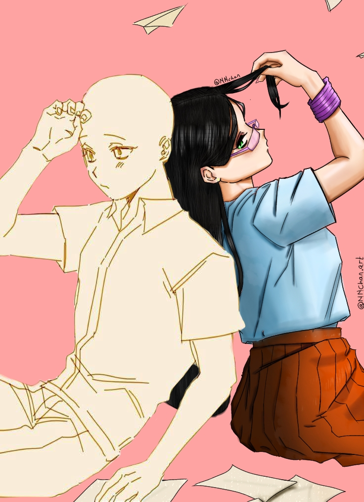

About NVERN
Passionate creators of visual worlds, driven by imagination and story.
Who We Are
We are students of Lead City University, working as Group 19 on a project for our course ICT 211. This website showcases our understanding of web development, creative design, and project collaboration.
THE TEAM
- Adepoju Paul
Computer Science
Lcu/ug/23/26125
- Batnah nimjir
Computer science
Lcu/pt/23/0688
- Oni Henry Olamide
Computer Science
LCU/UG/23/25954
- Famuyiwa Paul
Computer Science
Lcu/ug/23/27649
- Samuel Imoudu
Computer Science
LCU/UG/23/26059
- Williams Dennis
Computer science
LCU/UG/23/26059
- Raji Mubarak Opemipo
Software engineering
LCU-UG-23-26215
- Adeniran Adedeji John
Computer science
LCU/UG/23/27406
- OLAYIWOLA ENIOLA MUSHARAF
Computer science
Lcu/ug/24/30883
- OLALEKE OLUWANIFEMI
TOLUWALASE
Software Engineering
LCU/UG/23/25880
Why Concept Art?
Concept Art fascinates us because it combines storytelling and design. Whether it's creating new characters, building fantasy worlds, or designing futuristic cities, concept art lets ideas take visual form. We chose this niche to explore our love for creativity and digital media.
Our Unique Approach
- We blend academic skills with artistic storytelling.
- Our visuals are designed with real-world applications in mind — from games to animations.
- We focus on detail, mood, and emotion in every piece.